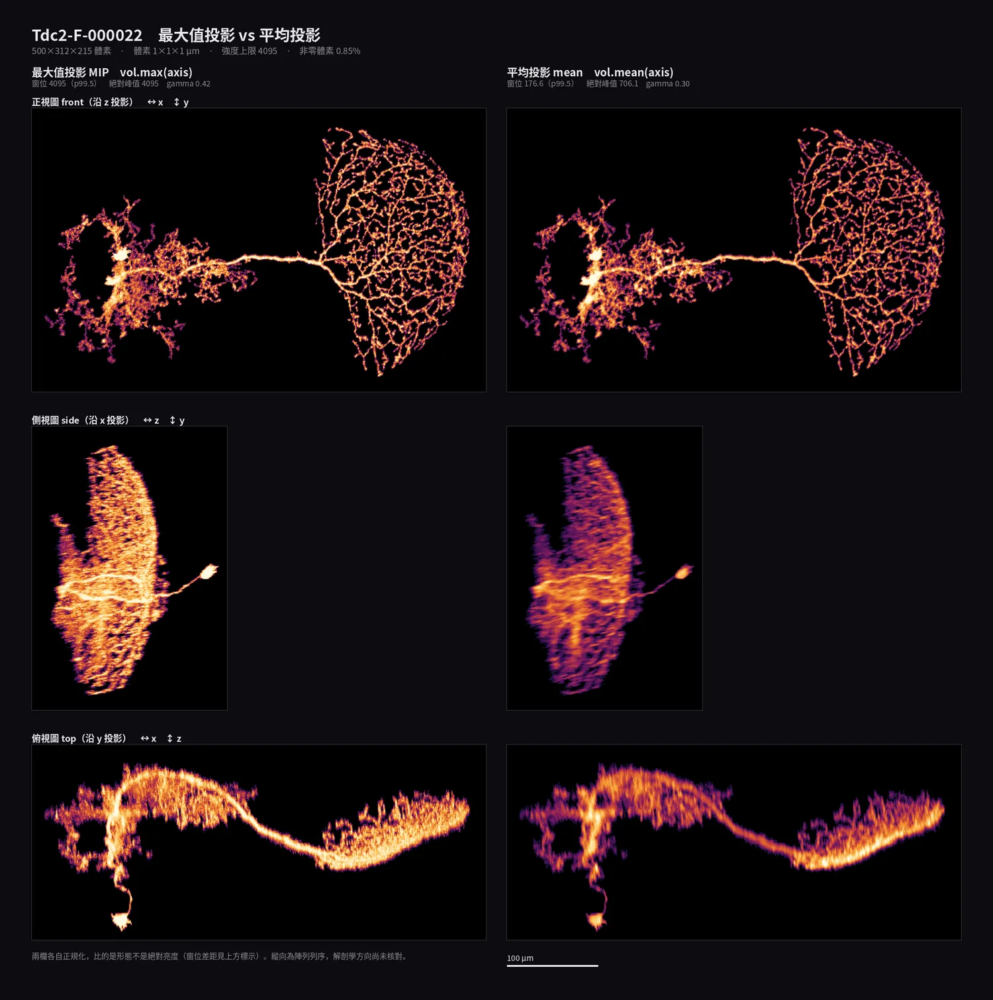

EP1-2 · 前置知識
約 10 分鐘讀完

涵蓋教學網頁與 15 分 28 秒影片 | 對象：無程式設計、無腦科學背景
這一集接續 EP1-1。EP1-1 的前置知識（檔案就是一長串數字、宣稱 ≠ 實測、刻度不同不能比、offset、bit depth……）這裡不重複，需要就去看：https://marginli.github.io/bsc-course/ep1-1/prelim.html 教學網頁自己也有兩張名詞速查表與六個核心觀念，那些也不在這裡重複。本文件只補兩邊都沒講、但沒有背景的人會卡住的部分。
全篇的判斷都架在這四件事上。EP1-1 的前置知識與網頁速查表都沒有從頭講，其他名詞查第二節或網頁自己的速查表就好。
要用一個數字概括幾十萬個亮度值，最直覺的是取最大值——而這是最糟的選擇：最大值只由「一個」點決定，那個點可能是雜訊、可能是特別亮的一小塊構造。
| 說法 | 意思 | 被一個離群點影響嗎 |
|---|---|---|
| 最大值 / 峰值 | 全部裡面最大的那一個 | 完全被綁架 |
| 中位數 | 排序後正中間那一個 | 幾乎不受影響 |
| 第 99.5 百分位 / p95 | 排序後第 99.5%（或 95%）的位置 | 幾乎不受影響 |
教材裡會出現「絕對峰值 706.1，而它自己的 99.5 百分位只有 176.6」——四倍的落差就是被一個點綁架的意思。看到「峰值」兩個字，先問「那個峰值是誰造成的」。
螢幕只有 256 階灰，而影像的數字可能是 0–4095，所以「哪個數字要顯示成全白」是一個選擇。
| 旋鈕 | 在決定什麼 | 轉錯會怎樣 |
|---|---|---|
| 窗位 (window) | 哪個數字算全白、哪個算全黑 | 設太高整片變黑，設太低整片過曝 |
| gamma | 中間調要壓暗還是提亮 | 細節糊掉或被壓進最暗的一兩階 |
關鍵是：這兩個旋鈕改的是「顯示」，不是資料本身。同一批數字轉一轉可以從「一片黑」變成「很清楚」。所以看到一張圖很暗，正確的第一個問題是「窗位設多少」，不是「這裡沒有訊號」——這一集 AI 就是在這裡摔了第一跤。
接 1-1：如果拿「峰值」當窗位，而峰值又是被一個點綁架的，整張圖就會被那一個點壓黑。這兩個觀念在教材裡是連在一起出事的。
3D 影像沒辦法直接印在紙上，要壓成 2D，這叫投影。做法是選一個方向「看穿」整個立體，沿著每一條視線（射線）把一整排體素合併成一個像素。合併的方式有兩種常見選擇：
| 怎麼合併 | 答的是什麼問題 | 代價 | |
|---|---|---|---|
| 最大值投影 MIP | 整條線上只取最亮的那一個 | 這條線上有沒有東西 | 很亮的地方會擠在一起分不出來 |
| 平均投影 mean | 整條線加總再除以長度 | 這條線被填了多少 | 數值跟著檔案裁多大而變 |
合併是不可逆的：兩根在 3D 裡分得很開的突起，只要落在同一條射線上，畫出來就是同一個像素——看起來像連在一起，這叫假接合。所以「這兩根有沒有相接」這種問題，單看一張投影圖答不出來。
更反直覺的是：換一個方向看，同一個東西可以變成另一個形狀——一片彎曲的薄殼正對鏡頭時是實心扇形，轉九十度就塌成一條細弧。教材會用數字證明。
要把神經元從背景雜訊裡挑出來，最基本的做法是訂一個閾值（threshold）：亮度超過它的算訊號，低於它的算背景。挑出來之後把彼此相鄰的訊號體素歸成一塊，就是連通元件（connected component）。一顆神經元理論上應該是一塊；算出來有幾百塊，代表中間斷掉了。
| 為什麼會斷 | 是不是真的斷了 |
|---|---|
| 那一段本來就比較暗，亮度掉到閾值以下 | 不是。是閾值切的，形態沒問題 |
| 那一塊本來就是分開的另一個構造 | 是。這才是真的異常 |
要分辨這兩種，得問「碎片離本體多遠」。這裡有一個陷阱：量「離質心多遠」會出事。質心是所有訊號點的平均位置——如果神經元是左右兩叢、中間是空的，質心就落在中間那塊空白處，於是「每一片碎片都離質心很遠」，但那是幾何造成的假象，不是真的分開。要量的是「離最近的本體有多遠」。
這一段是這一集最重要的一次自我修正的背景。同一批資料、兩種量法，結論完全相反。
小學教的是「逢五進位」（22.5 → 23）。但科學計算常用另一種叫「四捨六入五成雙」（銀行家捨入）：遇到剛好 .5 時進到最接近的偶數，所以 22.5 → 22、23.5 → 24、24.5 → 24。好處是大量數字加總時誤差不會系統性偏向一邊。
壞處是：拿它來算「這個點該落在第幾格」時，相鄰兩個座標可能被併進同一格，解析度悄悄少掉一半，而圖看起來一樣正常。numpy 預設就是這一種（np.rint）。
網頁自己那兩張表已經解釋了體素、投影、MIP、mean、三視圖、窗位/gamma、連通元件、距離變換、Agentic AI、Claude Code、已知的正確答案、正規化、產生器、numpy/Pillow/SciPy。EP1-1 的前置知識則有 offset、bit depth、端序、微米、共軛焦顯微鏡、BoundingBox、處理管線、幻覺等等（https://marginli.github.io/bsc-course/ep1-1/prelim.html）。以下是兩邊都沒收、但這一集會用到的：
| 名詞 | 一句話 | 名詞 | 一句話 |
|---|---|---|---|
| 中位數 | 排序後正中間那個數（見 1-1） | 胞體 (soma) | 神經元的細胞本體，通常是最亮最大的一團 |
| 百分位數 | 第 p% 的位置；p95＝第 95 百分位 | 突起 / 軸突 | 神經元伸出去的細長分支 |
| 峰值 | 全部裡面最大的那一個，很容易被一點綁架 | 品系 (driver line) | 檔名前綴，標記這顆神經元屬於哪一類 |
| 飽和 / 頂到上限 | 亮度已達可表示的最大值，再亮也記不下來 | 背腹 / 前後 | 解剖學上的方向；這一集沒有核對過 |
| 過曝 | 窗位設太低，一大片全變成白的 | 標準腦 | 共用的參考座標系，各檔疊回去才能互相比位置 |
| 射線 (ray) | 投影時「看穿」立體的那一條視線 | 非零比例 | 有訊號的體素佔整個立體的百分比 |
| 投影深度 | 那條射線穿過的距離；三個視角各不同 | 訊噪比 (SNR) | 訊號比雜訊強多少；太低就分不出誰是誰 |
| 等效厚度 | mean × 深度 ÷ MIP，算出「這條線多厚」 | 閾值 (threshold) | 亮度超過它算訊號，低於它算背景（見 1-4） |
| 假接合 | 3D 上分開的東西，投影後疊成同一個像素 | 質心 (centroid) | 所有訊號點的平均位置，不一定落在實體上 |
| 26-連通 | 3D 上判定「相鄰」的規則，含斜對角共 26 個鄰居 | 二值侵蝕 | 把訊號區域從邊緣往內削一層，用來找粗的部分 |
| gamma | 中間調要壓暗或提亮的旋鈕（見 1-2） | 點雲 | 只保留有訊號的座標清單，不保留整個立方體 |
| 四捨六入五成雙 | 遇到 .5 進到偶數的捨入法（見 1-5） | TTS | 文字轉語音；影片的旁白是這樣產生的 |
其中「質心」與「閾值」最重要：這一集最精彩的一次自我修正，就是把「碎片離質心很遠」改成「碎片離本體很近」之後，結論整個翻過來。
這 20 個檔的檔名長這樣：Tdc2-F-000022_seg001_warp_volume.am，拆開來是「品系－性別－編號」。品系是基因標記的名稱，用來圈出某一類神經元；20 個檔涵蓋 6 種品系（Tdc2 六個、TH 六個、VGlut 三個、Trh 三個、Gad1 一個、fru 一個），性別 19 個 F、1 個 M。
品系名各自代表哪一類神經元，是果蠅神經科學的通用命名，不是這一集查證出來的，教材也沒有用到——形態判讀完全不依賴它。知道「前綴一樣代表同一類」就夠了：教材會指出同品系的幾顆形態高度相似，那等於一次免費的交叉驗證。
能用自己的話回答下面 6 題，就可以開始了。參考答案在表格後面——先自己答一次再對，不然等於沒檢查。
| # | 問題 | 回去看 |
|---|---|---|
| 1 | 為什麼「最大值」是概括一批數字時最不可靠的選擇？ | 1-1 |
| 2 | 一張圖看起來全黑，第一個該懷疑的是什麼？ | 1-2 |
| 3 | 把 3D 壓成 2D 時，什麼東西一定會被弄丟？ | 1-3 |
| 4 | 圖上兩根突起看起來接在一起，能不能就說它們真的相接？ | 1-3 |
| 5 | 一顆神經元算出來碎成三百塊，有哪兩種可能的原因？ | 1-4 |
| 6 | 為什麼「碎片離質心 445 微米」不能證明它是另一顆細胞？ | 1-4 |
這三句分別對應教材裡 AI 摔的第一跤、全集最好的那一句提問，以及最後那次自我推翻。
| 數字 | 怎麼來的 |
|---|---|
| 5.5 倍 | 20 個檔的寬度從 153 µm 到 842 µm，842 ÷ 153 ≈ 5.5。這就是「不強制共用比例尺，圖版就是假的」的理由。 |
| 5.8× / 27.3× / 16.0× | MIP 峰值 ÷ mean 峰值，三個視角各一個。倍率跟著投影深度走（215 / 500 / 312 µm），不是跟著神經元走——所以 mean 的絕對值被裁切範圍綁死，跨檔不能比。 |
| 32.9% / 77.8% / 70.7% | 沿射線數出「有兩段以上分離構造」的像素比例，三個視角各一個。側視圖近八成，代表只看那一張圖判斷連通性，八成的像素都不能信。 |
| 31,089 / 9,828 | 0° 斜角投影應該得到的可見像素數，與有 bug 那版實際得到的數——只剩 32%，而圖看起來一樣漂亮。這就是為什麼要有一個已知的正確答案。 |
BSC with Agentic AI Tutorial · EP1-2 前置知識